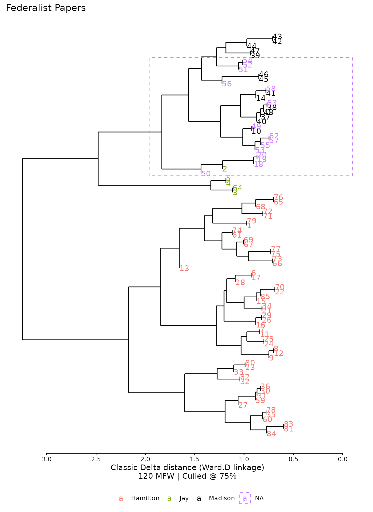
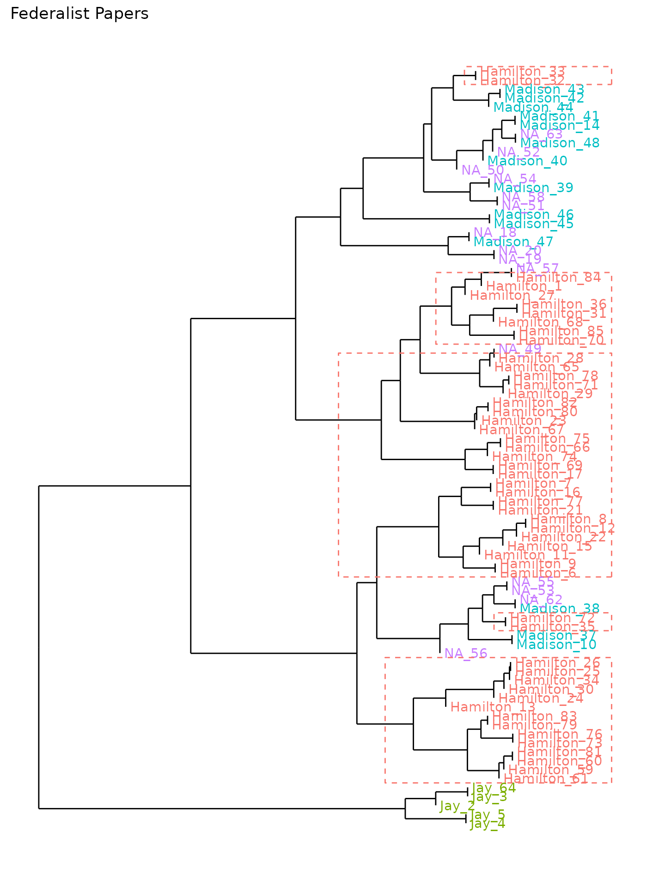

hierarchical-clustering
hierarchical-clustering.RmdIn addition to two-dimensional relationships with principal components, stylo can also show a dendrogram for cluster analysis, showing texts’ relationships based on their distance to each other. The resulting dendrogram shows texts in branches splitting off from one another at points that correspond to distance. In the orientation shown below, when two texts or groups of texts seem to have greater stylistic similarity, their branches will join nearer to the right side of the chart—nearer to a distance of zero. As the texts show greater dissimilarity, their branches will connect closer to the left side of the chart.
federalist_mfw_hc <-
stylo(gui = FALSE,
corpus.dir = system.file("extdata/federalist", package = "stylo2gg"),
custom.graph.title = "Federalist Papers",
analysis.type = "CA",
analyzed.features = "w",
ngram.size = 1,
display.on.screen = TRUE,
sampling = "no.sampling",
culling.max = 75,
culling.min = 75,
mfw.min = 900,
mfw.max = 900)Dendrogram of hierarchical clusters, prepared by stylo.
Using this federalist_mfw_hc object, stylo2gg will
create a similar cluster analysis:
federalist_mfw_hc |>
stylo2gg()The addition of symbols to the chart allows for interpretability when
printing, though these can be turned off with shapes=FALSE,
as they can when showing PCA. In fact, many of the same options that
apply to a visualization of principal components will also apply to
cluster analysis:
library(ggplot2)
federalist_mfw_hc |>
stylo2gg(viz = "CA",
labeling = 2,
highlight = 4,
black = 3) +
theme(legend.position = "bottom") +
scale_shape_manual(values = 15:18)
Options for distance and linkage
If they are available, stylo2gg will adopt stylo’s settings for
measuring distances and finding groups. If they’re not available, it
will default to finding distance using the Burrows delta
(distance.measure="delta") and grouping texts using the
Ward1 method (linkage="ward.D"). Many other options native
to stylo and to R can be set for these.
Minimal display
When setting viz="CA" or importing directly from a stylo
analysis with the option set analysis.type="CA", stylo2gg
will try to approximate the aesthetics shown by stylo, displaying an
axis of distance and an explanatory caption. These options may not be
desired since relative distances are already meaningful without the
axis. To show a minimal dendrogram, choose the option
viz="hc" (for hierarchical clustering)
federalist_mfw_hc |>
stylo2gg(viz = "hc",
shapes = FALSE,
linkage = "ward.D2",
distance = "euclidean") +
expand_limits(y = 0)This minimal dendrogram shows clusters using the Ward2 method based on Euclidean distances. If labels get clipped at the edge, consider expanding the limits using the added function shown here.
Highlighting results with boxes
As shown above, setting the highlight option to a
category’s number will draw a box around the branches containing this
category. Unlike with principal components visualization, only one
category can be highlighted at a time on a dendrogram; nevertheless,
there are a few more options available to tweak this highlighting.
By default, stylo2gg will draw a single box, even if texts belonging to a category are distributed unevenly.
federalist_mfw_hc |>
stylo2gg(viz = "hc",
shapes = FALSE,
highlight = 1,
highlight.nudge = 0.4,
linkage = "ward.D2",
distance = "euclidean") +
expand_limits(y = 0)
Drawing a highlight box when texts are distributed widely isn’t very
useful. The highlight.nudge option here moves the box’s
edge to avoid clipping labels; whether it is needed might depend on
local installations.
Setting highlight.single=FALSE will instead draw
multiple boxes while consolidating any contiguous branches:
federalist_mfw_hc |>
stylo2gg(viz = "hc",
shapes = FALSE,
highlight = 1,
highlight.nudge = 0.4,
highlight.single = FALSE,
linkage = "ward.D2",
distance = "euclidean") +
expand_limits(y = 0)
As an alternative to categorical highlighting on a dendrogram, stylo2gg can draw boxes indicated by each text’s index number from the bottom, with the lowest text being number 1, the second-lowest text number 2, etc:
federalist_mfw_hc |>
stylo2gg(viz = "hc",
shapes = FALSE,
highlight.box = c(6:19, 23:24, 29:63, 84:85),
highlight.nudge = 0.4,
linkage = "ward.D2",
distance = "euclidean",
show.zero = FALSE)
Manually indicate groupings to highlight using the
highlight.box option. To aid in the counting, set
count.labels=TRUE.